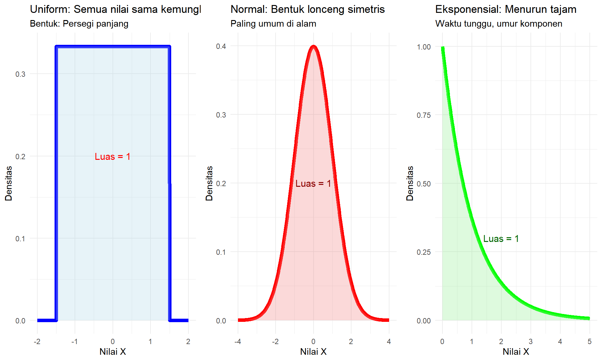
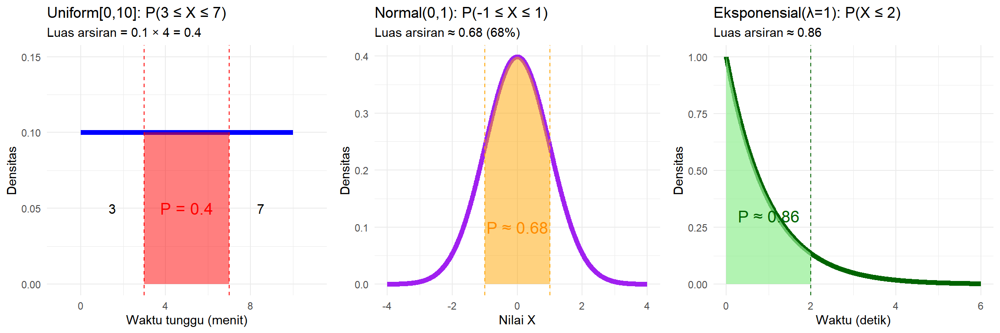

7 Peubah Acak, Ekspektasi, dan Variansi
Catatan Penting
Materi ini disusun khusus untuk mahasiswa yang belum mempelajari kalkulus. Fokus utama adalah pada peubah acak diskret yang hanya membutuhkan aljabar dasar dan penjumlahan. Bagian peubah acak kontinu akan dijelaskan secara konseptual tanpa perhitungan integral yang rumit.
7.1 PENDAHULUAN
Peubah acak (random variable) adalah cara kita memberikan angka pada hasil eksperimen acak.
Analogi sederhana:
Bayangkan kita lempar koin. Hasilnya bisa “Kepala” atau “Ekor”. Untuk memudahkan perhitungan, kita beri angka:
- Kepala = 1
- Ekor = 0
Inilah yang disebut peubah acak!
7.1.1 Mengapa Penting?
Dengan peubah acak, kita bisa:
- Menghitung rata-rata hasil eksperimen
- Mengukur seberapa tersebar hasilnya
- Membuat prediksi dan keputusan
- Menyelesaikan masalah praktis
7.2 BAGIAN I: PEUBAH ACAK DISKRET
7.2.1 Apa itu Peubah Acak Diskret?
Peubah acak diskret adalah peubah acak yang nilainya bisa dihitung satu per satu.
Contoh:
- Jumlah mata dadu: 1, 2, 3, 4, 5, 6
- Banyak kepala dalam 3 lemparan koin: 0, 1, 2, 3
- Jumlah mahasiswa yang hadir: 0, 1, 2, …, 40
Bukan contoh diskret:
- Tinggi badan (bisa 170.5 cm, 170.51 cm, dst)
- Waktu (bisa 2.3 detik, 2.31 detik, dst)
7.2.2 Fungsi Massa Peluang (PMF)
PMF adalah tabel yang menunjukkan peluang setiap nilai.
Aturan PMF:
- Setiap peluang antara 0 dan 1
- Total semua peluang = 1
Format: P(X = x) = peluang X bernilai x
7.2.3 Contoh 1: Lempar Dadu Sekali
X = hasil lempar dadu fair (6 sisi)
Nilai yang mungkin: 1, 2, 3, 4, 5, 6 Setiap nilai sama kemungkinannya
| x | 1 | 2 | 3 | 4 | 5 | 6 |
|---|---|---|---|---|---|---|
| P(X=x) | 1/6 | 1/6 | 1/6 | 1/6 | 1/6 | 1/6 |
Cek: \(\frac{1}{6} + \frac{1}{6} + \frac{1}{6} + \frac{1}{6} + \frac{1}{6} + \frac{1}{6} = \frac{6}{6} = 1\) ✓
7.2.4 Contoh 2: Lempar Koin 2 Kali
X = banyaknya kepala dalam 2 lemparan
Cara menghitung:
- Ruang sampel: {HH, HT, TH, TT}
- X = 0: {TT} → 1 cara dari 4 → P(X=0) = 1/4
- X = 1: {HT, TH} → 2 cara dari 4 → P(X=1) = 2/4 = 1/2
- X = 2: {HH} → 1 cara dari 4 → P(X=2) = 1/4
Tabel PMF:
| x | 0 | 1 | 2 |
|---|---|---|---|
| P(X=x) | 1/4 | 1/2 | 1/4 |
Cek: \(\frac{1}{4} + \frac{1}{2} + \frac{1}{4} = \frac{1+2+1}{4} = 1\) ✓
7.2.5 Contoh 3: Jumlah 2 Dadu
Y = jumlah hasil lempar 2 dadu
Nilai yang mungkin: 2, 3, 4, 5, 6, 7, 8, 9, 10, 11, 12
Cara menghitung P(Y=7):
Kombinasi yang menghasilkan jumlah 7:
- (1,6), (2,5), (3,4), (4,3), (5,2), (6,1) → 6 cara
- Total kemungkinan: 6 × 6 = 36
- P(Y=7) = 6/36 = 1/6
Tabel lengkap:
| y | 2 | 3 | 4 | 5 | 6 | 7 | 8 | 9 | 10 | 11 | 12 |
|---|---|---|---|---|---|---|---|---|---|---|---|
| Cara | 1 | 2 | 3 | 4 | 5 | 6 | 5 | 4 | 3 | 2 | 1 |
| P(Y=y) | 1/36 | 2/36 | 3/36 | 4/36 | 5/36 | 6/36 | 5/36 | 4/36 | 3/36 | 2/36 | 1/36 |
Mengapa jumlah 7 paling sering? Karena ada paling banyak cara membuatnya!
7.2.6 NILAI EKSPEKTASI (RATA-RATA)
7.2.7 Definisi Sederhana
Ekspektasi = rata-rata nilai jika eksperimen diulang sangat banyak kali
Formula untuk diskret: \[E(X) = \sum_{\text{semua } x} x \times P(X = x)\]
Artinya: Kalikan setiap nilai dengan peluangnya, lalu jumlahkan.
7.2.8 Contoh 4: Ekspektasi Lempar Dadu
X = hasil lempar dadu
E(X) = 1×(1/6) + 2×(1/6) + 3×(1/6) + 4×(1/6) + 5×(1/6) + 6×(1/6)
= (1 + 2 + 3 + 4 + 5 + 6) × (1/6)
= 21 × (1/6)
= 3.5Interpretasi:
- Jika kita lempar dadu 1000 kali, rata-rata hasilnya akan mendekati 3.5
- Bukan berarti dadu bisa menghasilkan 3.5!
- 3.5 adalah rata-rata jangka panjang
7.2.9 Contoh 5: Ekspektasi Koin 2 Kali
X = banyak kepala dalam 2 lemparan
| x | 0 | 1 | 2 |
|---|---|---|---|
| P(X=x) | 1/4 | 1/2 | 1/4 |
E(X) = 0×(1/4) + 1×(1/2) + 2×(1/4)
= 0 + 1/2 + 2/4
= 0 + 1/2 + 1/2
= 1Interpretasi: Rata-rata kita dapat 1 kepala dalam 2 lemparan.
7.2.10 Contoh 6: Permainan Untung-Rugi
Aturan permainan:
- Bayar Rp 10,000 untuk main
- Lempar koin 2 kali
- Dapat Rp 25,000 jika 2 kepala
- Dapat Rp 10,000 jika 1 kepala
- Dapat Rp 0 jika 0 kepala
Pertanyaan: Apakah permainan ini menguntungkan?
Penyelesaian:
Misalkan Y = keuntungan bersih
| Hasil | Peluang | Pendapatan | Keuntungan |
|---|---|---|---|
| 2 kepala | 1/4 | 25,000 | 15,000 |
| 1 kepala | 1/2 | 10,000 | 0 |
| 0 kepala | 1/4 | 0 | -10,000 |
E(Y) = 15,000×(1/4) + 0×(1/2) + (-10,000)×(1/4)
= 3,750 + 0 - 2,500
= 1,250Kesimpulan: Rata-rata untung Rp 1,250 per permainan. Menguntungkan!
7.2.11 Sifat-Sifat Ekspektasi
1. Konstanta keluar: \(E(aX) = a \times E(X)\)
2. Tambah konstanta: \(E(X + b) = E(X) + b\)
3. Kombinasi: \(E(aX + b) = a \times E(X) + b\)
4. Penjumlahan: \(E(X + Y) = E(X) + E(Y)\) (selalu berlaku!)
7.2.12 Contoh 7: Menggunakan Sifat Ekspektasi
Jika E(X) = 10, hitung:
a) E(3X)
E(3X) = 3 × E(X) = 3 × 10 = 30b) E(X + 5)
E(X + 5) = E(X) + 5 = 10 + 5 = 15c) E(2X - 7)
E(2X - 7) = 2 × E(X) - 7 = 2 × 10 - 7 = 137.3 VARIANSI DAN STANDAR DEVIASI
7.3.1 Mengapa Perlu Variansi?
Masalah: Dua permainan punya ekspektasi sama, tapi risikonya beda.
Permainan A: Selalu dapat Rp 1,000 → E(A) = 1,000
Permainan B: 50% dapat Rp 0, 50% dapat Rp 2,000 → E(B) = 1,000
Ekspektasi sama, tapi risiko berbeda! Permainan B lebih berisiko.
Variansi mengukur seberapa tersebar nilai dari rata-ratanya.
7.3.2 Definisi Variansi
Variansi = rata-rata kuadrat selisih dengan ekspektasi
Formula yang mudah: \[Var(X) = E(X^2) - [E(X)]^2\]
Langkah-langkah:
- Hitung E(X)
- Hitung E(X²)
- Var(X) = E(X²) - [E(X)]²
Standar Deviasi: \[SD(X) = \sqrt{Var(X)}\]
7.3.3 Contoh 8: Variansi Lempar Dadu
X = hasil lempar dadu
Langkah 1: E(X) = 3.5 (sudah dihitung sebelumnya)
Langkah 2: Hitung E(X²)
| x | 1 | 2 | 3 | 4 | 5 | 6 |
|---|---|---|---|---|---|---|
| x² | 1 | 4 | 9 | 16 | 25 | 36 |
| P(X=x) | 1/6 | 1/6 | 1/6 | 1/6 | 1/6 | 1/6 |
E(X²) = 1×(1/6) + 4×(1/6) + 9×(1/6) + 16×(1/6) + 25×(1/6) + 36×(1/6)
= (1 + 4 + 9 + 16 + 25 + 36) × (1/6)
= 91 × (1/6)
= 15.17Langkah 3: Hitung Variansi
Var(X) = E(X²) - [E(X)]²
= 15.17 - (3.5)²
= 15.17 - 12.25
= 2.92
SD(X) = √2.92 ≈ 1.717.3.4 Contoh 9: Variansi Koin 2 Kali
X = banyak kepala dalam 2 lemparan
E(X) = 1 (sudah dihitung sebelumnya)
Hitung E(X²):
| x | 0 | 1 | 2 |
|---|---|---|---|
| x² | 0 | 1 | 4 |
| P(X=x) | 1/4 | 1/2 | 1/4 |
E(X²) = 0×(1/4) + 1×(1/2) + 4×(1/4)
= 0 + 1/2 + 1
= 1.5
Var(X) = 1.5 - (1)²
= 1.5 - 1
= 0.5
SD(X) = √0.5 ≈ 0.717.3.5 Sifat-Sifat Variansi
1. Konstanta keluar kuadrat: \(Var(aX) = a^2 \times Var(X)\)
2. Tambah konstanta tidak mengubah variansi: \(Var(X + b) = Var(X)\)
3. Kombinasi: \(Var(aX + b) = a^2 \times Var(X)\)
4. Jika X dan Y independen: \(Var(X + Y) = Var(X) + Var(Y)\)
5. Selalu non-negatif: \(Var(X) \geq 0\)
7.3.6 Contoh 10: Menggunakan Sifat Variansi
Jika Var(X) = 9, hitung:
a) Var(2X)
Var(2X) = 2² × Var(X) = 4 × 9 = 36b) Var(X + 5)
Var(X + 5) = Var(X) = 9
(Tambah konstanta tidak mengubah variansi)c) SD(3X)
Var(3X) = 3² × Var(X) = 9 × 9 = 81
SD(3X) = √81 = 97.4 BAGIAN II: PEUBAH ACAK KONTINU
Catatan untuk Bagian Ini
Bagian ini dijelaskan secara konseptual tanpa perhitungan kalkulus yang rumit. Fokus pada pemahaman ide dan penggunaan formula hasil akhir.
7.4.1 Apa itu Peubah Acak Kontinu?
Peubah acak kontinu adalah peubah acak yang nilainya bisa berupa interval (tidak bisa dihitung satu per satu).
Contoh:
- Tinggi mahasiswa: bisa 170.1 cm, 170.15 cm, 170.151 cm, dst
- Waktu tunggu bus: bisa 5.2 menit, 5.23 menit, dst
- Suhu ruangan: bisa 25.6°C, 25.63°C, dst
Perbedaan utama dengan diskret:
- Diskret: P(X = nilai tertentu) bisa > 0
- Kontinu: P(X = nilai tertentu) = 0 (selalu!)
Yang bermakna untuk kontinu: P(a ≤ X ≤ b) = peluang X di antara a dan b
7.4.2 Fungsi Densitas Peluang (PDF)
PDF adalah “kurva peluang” untuk peubah acak kontinu.
Konsep penting:
- Tinggi kurva = densitas peluang
- Luas di bawah kurva = peluang
- Total luas = 1
Interpretasi geometris: P(a ≤ X ≤ b) = Luas di bawah kurva dari a sampai b
Mari kita lihat contoh kurva PDF:
Poin penting dari kurva di atas:
- Uniform: Tinggi sama di semua tempat = peluang merata
-
Normal: Tinggi di tengah = nilai tengah paling mungkin
- Eksponensial: Tinggi di kiri = nilai kecil lebih sering
- Semua kurva: Total luas di bawah kurva = 1
7.4.3 Contoh 11: Konsep Dasar Kontinu
Bayangkan kita mengukur waktu tunggu bus yang bisa berapa saja antara 0 sampai 10 menit.
Perbedaan dengan diskret:
- Diskret: Lempar dadu → hasil pasti 1,2,3,4,5, atau 6
- Kontinu: Waktu tunggu → bisa 2.3 menit, 5.67 menit, 8.123 menit, dst
Konsep PDF:
- Tidak ada “peluang tepat” untuk nilai tertentu
- Yang ada adalah “peluang dalam rentang”
- Contoh: P(3 ≤ waktu ≤ 7) = peluang tunggu antara 3-7 menit
Cara berpikir:
- Luas di bawah kurva = peluang
- Total luas kurva = 1
Ingat!
Untuk peubah acak kontinu, kita tidak pernah bertanya “Berapa peluang X = 5.0000 tepat?” karena jawabannya selalu 0. Yang bermakna adalah “Berapa peluang X antara 4.9 dan 5.1?”
Mari kita lihat konsep “Luas = Peluang” secara visual:

Yang bisa kita pelajari:
- Persegi panjang (Uniform): Mudah hitung luas = panjang × lebar
-
Lonceng (Normal): Simetris, area tengah paling besar
- Menurun (Eksponensial): Area kiri (nilai kecil) dominan
- Prinsip umum: Semakin tinggi kurva di suatu area = semakin besar peluang
7.4.4 Ekspektasi dan Variansi Kontinu
Konsep sama dengan diskret:
- Ekspektasi = nilai tengah distribusi
- Variansi = ukuran sebaran
Yang berbeda: Cara menghitung (pakai integral, tapi kita skip!)
Prinsip umum:
- Untuk peubah acak kontinu, ekspektasi dan variansi tetap ada
- Perhitungannya lebih rumit (butuh kalkulus)
- Interpretasinya sama dengan diskret
Fokus Minggu Ini
Untuk sekarang, yang penting adalah memahami konsep ekspektasi dan variansi dari peubah acak diskret. Distribusi spesifik (Uniform, Normal, dll) akan dipelajari minggu depan dengan rumus yang sudah jadi.
7.5 PERBANDINGAN DISKRET VS KONTINU
| Aspek | Diskret | Kontinu |
|---|---|---|
| Nilai | Dapat dihitung: 1,2,3,… | Interval: [0,10] |
| P(X=nilai) | Bisa > 0 | Selalu = 0 |
| Fungsi | PMF (tabel/formula) | PDF (kurva) |
| Peluang | Jumlahkan PMF | Luas di bawah kurva |
| Total | Σ PMF = 1 | Luas total = 1 |
| Contoh | Jumlah dadu, koin | Tinggi, berat, waktu |
| Perhitungan | Penjumlahan | Integral (skip!) |
Mari kita lihat perbedaan visual PMF vs PDF:
Perbedaan kunci yang terlihat:
| Aspek | PMF (Diskret) | PDF (Kontinu) |
|---|---|---|
| Visual | Batang terpisah | Kurva halus |
| Tinggi | = Peluang tepat | = Densitas (bukan peluang) |
| Peluang | Tinggi batang | Luas di bawah kurva |
| Total | Jumlah tinggi = 1 | Luas total = 1 |
| P(X=nilai) | Bisa > 0 | Selalu = 0 |
7.6 APLIKASI PRAKTIS
7.6.1 Contoh 14: Analisis Investasi
Investasi A: - E(return) = 10%, SD = 3%
Investasi B: - E(return) = 12%, SD = 8%
Analisis:
- B punya return ekspektasi lebih tinggi
- Tapi B lebih berisiko (SD lebih besar)
- Pilihan tergantung profil risiko
Coefficient of Variation (CV): \[CV = \frac{SD}{E(X)}\]
CV_A = 3/10 = 0.3
CV_B = 8/12 ≈ 0.67
A lebih stabil relatif terhadap returnnya7.6.2 Contoh 15: Quality Control
Mesin produksi baut dengan:
- E(diameter) = 10 mm
- SD(diameter) = 0.1 mm
Spesifikasi: diameter 10 ± 0.3 mm (9.7 - 10.3 mm)
Analisis:
- Dengan SD kecil (0.1), kebanyakan produk sesuai spesifikasi
- Jika SD besar (0.5), banyak produk di luar spesifikasi
Prinsip: Semakin kecil SD, semakin konsisten kualitas.
7.6.3 Contoh 16: Portofolio Investasi
Dua saham independen:
- Saham A: E = $100, SD = $20
- Saham B: E = $150, SD = $30
Total investasi: X = A + B
E(X) = E(A) + E(B) = 100 + 150 = $250
Var(X) = Var(A) + Var(B) = 20² + 30² = 400 + 900 = 1,300
SD(X) = √1,300 ≈ $36Insight: Diversifikasi tidak mengurangi total risiko jika saham independen!
7.7 KESALAHAN UMUM & CARA MENGHINDARI
7.7.1 1. “E(X) = 3.5 berarti dadu bisa menghasilkan 3.5”
❌ Salah! Ekspektasi adalah rata-rata jangka panjang, bukan nilai individu.
7.7.2 2. E(X²) = [E(X)]²
❌ Salah! Ekspektasi kuadrat ≠ kuadrat ekspektasi ✅ Benar: Umumnya E(X²) > [E(X)]²
7.7.3 3. Var(2X) = 2 × Var(X)
❌ Salah! Konstanta keluar kuadrat ✅ Benar: Var(2X) = 2² × Var(X) = 4 × Var(X)
7.7.4 4. Var(X+Y) = Var(X) + Var(Y)
❌ Tidak selalu! Hanya berlaku jika X dan Y independen
7.8 TABEL RINGKASAN FORMULA
7.8.1 Diskret
\[E(X) = \sum x \cdot P(X=x)\] \[Var(X) = E(X^2) - [E(X)]^2\]
7.8.2 Sifat-Sifat
\[E(aX + b) = aE(X) + b\] \[Var(aX + b) = a^2 Var(X)\] \[SD(X) = \sqrt{Var(X)}\]
7.8.3 Distribusi Umum
Akan dipelajari minggu depan dengan rumus lengkap
| Jenis | E(X) | Var(X) |
|---|---|---|
| Uniform[a,b] | (a+b)/2 | (b-a)²/12 |
| Eksponensial(λ) | 1/λ | 1/λ² |
| Normal(μ,σ) | μ | σ² |
7.9 LATIHAN MANDIRI
7.9.1 Level 1: Dasar
X = hasil lempar koin (H=1, T=0). Buat PMF, hitung E(X) dan Var(X).
Y = jumlah 2 koin (H=1, T=0). Buat PMF, hitung E(Y) dan Var(Y).
7.9.2 Level 2: Menengah
Permainan: bayar Rp 5,000, lempar dadu, dapat Rp 6,000 jika genap. Hitung E(keuntungan).
Jika E(X) = 15 dan Var(X) = 25, hitung E(2X-10) dan SD(2X-10).
7.9.3 Level 3: Aplikasi
Dua investasi independen: E₁=$50, SD₁=$8, E₂=$80, SD₂=$12. Hitung E dan SD portofolio.
[Preview minggu depan] Jika waktu tunggu mengikuti distribusi tertentu dengan E(waktu)=5 menit dan Var(waktu)=9, berapa SD(waktu)?